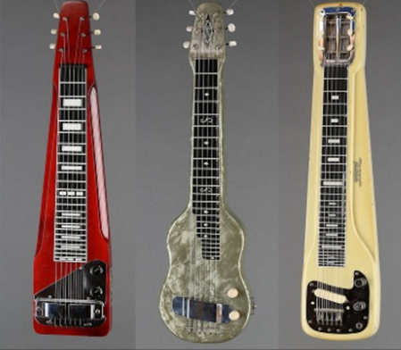
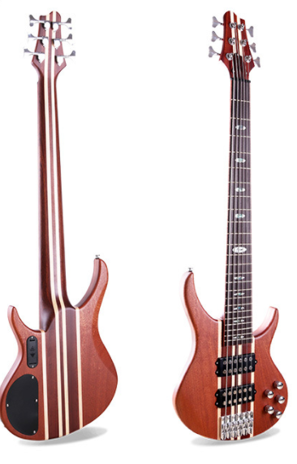

GUITAR
My guitar is not a thing. It is an extension of myself. It is who I am.
Different types of guitar and their information:
1. ACOUSTIC GUITARS
There are two types of acoustic guitar: namely, the steel-string acoustic guitar and the classical guitar. Steel-string acoustic guitars produce a metallic sound that is a distinctive component of a wide range of popular genres. Steel-string acoustic guitars are sometimes referred to as flat tops. The word top refers to the face or front of the guitar, which is also called the table. Classical guitars have a wider neck than steel-string guitars and are strung with nylon strings. They are primarily associated with the playing of the solo classical guitar repertoire. Classical guitars are sometimes referred to as Spanish guitars in recognition of their country of origin.


2. ELECTRIC GUITARS
Electric guitars are solid-bodied guitars that are designed to be plugged into an amplifier. The electric guitar when amplified produces a sound that is metallic with a lengthy decay. The shape of an electric guitar is not determined by the need for a deep resonating body and this had led to the development of contoured and thin bodied electric guitars. The two most popular designs are the Fender Stratocaster and the Gibson Les Paul.


3. ELECTRO-ACOUSTIS GUITARS
Electro-acoustic guitars are commonly referred to as semi-acoustic guitars. Electro-acoustic guitars have pickups that are specifically designed to reproduce the subtle nuances of the acoustic guitar timbre. Electro-acoustic pickups are designed to sound neutral with little alteration to the acoustic tone. The Ovation range of Electro-acoustic guitars have under-the-saddle piezo pickups and a synthetic bowl-back design. The synthetic bowl-back ensures a tough construction that stands up to the rigours of the road while offering less feedback at high volumes. Ovation were the first company to provide on-board Equalization and this is now a standard feature. The Taylor Electro-acoustic range uses the traditional all-wood construction and the necks of these guitars have a reputation for superb action and playability. Yamaha, Maton and many other companies manufacture Electro-acoustic guitars and the buyer is advised to test as many models and makes as they can while taking note of the unplugged and amplified sound.


4.TWELEVE-STRINGS GUITARS
The twelve-string guitar is a simple variation of the normal six string design. Twelve-string guitars have six regular strings and a second set of thinner strings. Each string of the second set corresponds to the note of its regular string counterpart. The strings form pairs and therefore you play a twelve-string guitar in the same manner as you would a standard six-string.
Twelve-string guitars produce a brighter and more jangly tone than six-string guitars. They are used by guitarists for chord progressions that require thickening. The twelve-string is mainly used as a rhythm instrument due to the extra effort involved in playing lead guitar using paired strings. Twelve-string guitars have twelve tuning pegs and double truss rods and are slightly more expensive than their corresponding six-string version.


5. ARCHTOP GUITARS
The archtop is a hollow or semi-hollow steel-string acoustic or electric guitar. The carved top, combined with violin-style f-holes and internal sound-block, creates a timbre that is acoustic and mellow. These two factors have made archtops a firm favourite with jazz guitarists.
Acoustic and electric archtops are identical in design with the only difference being the addition of electro-magnetic pickups and pots. Archtops can either be full-bodied or thinline. The full-bodied archtop retains good volume and acoustic resonance when played unplugged, though feedback may be an issue when amplified. The thinline body minimizes feedback by sacrificing acoustic volume and resonance.


6. STEEL GUITARS
The steel guitar is unusual in that it is played horizontally across the player's lap. The steel guitar originates from Hawaii where local musicians, newly introduced to the European guitar, developed a style of playing involving alternative tunings and the use of a slide. The Hawaiian guitarists found that by laying the guitar flat across the lap they could better control the slide. In response to this new playing style some Hawaiian steel guitars were constructed with a small rectangular body which made them more suitable for laying across the lap.There are two types of steel guitar played with a steel, the solid metal bar from which the guitar takes its name, namely the lap steel guitar and the pedal steel guitar with its extra necks.


7. TOUCH GUITARS
The first Touch Guitar Invention started in 1959 with the filing of patent #2,989,884 issued in 1961 as the first touch tapping instrument which could be played on two separated necks Simultaneously by muting the strings at the distal end of the neck along with numerous other claims. Until 1974 it was known as the DuoLectar and with a new patent "the "Electronic Mute" has been known as the "Touch Guitar. It is held in the normal way over the shoulder and design with the left hand playing the lower bass neck in a traditional way and the right hand playing over the top on a neck which has a wider string spacing allowing the hand to be used in both vertical and horizontal angles to the strings. It is absolutely off at all times, until Touched or picked.


8. REASONATOR GUITARS
Resonator guitars are distinctive for not having a regular sound hole instead they have a large circular perforated cover plate which conceals a resonator cone. The cone is made from spun aluminum and resembles a loudspeaker. The bridge is connected to either the center or edge of the cone by an aluminum spring called the spider. The vibrations from the spider are projected by the cone through the perforated cover plate. The most common resonator guitars have a single cone although the original model patented in 1927 by John Dopyera had three and was called a tricone resophonic guitar. Resonator guitars are loud and bright. They are popular with blues and country guitarists and can be played with a slide or conventionally.

9. BASS GUITARS
The bass guitar has a long neck (scale-length) and thick strings. The open strings of the bass guitar corresponds to the four lowest strings of the guitar and are pitched an octave lower. The standard bass has four strings though five and six string basses are available which extends the range of the instrument. Because the bass guitar is the bass instrument of the guitar family and the double-bass is the bass instrument of the orchestral string family, their similar roles have drawn bass players to both instruments.


10. DOUBLE-NECK GUITARS
The double-neck guitar is designed so that two guitar necks can share one body. This design allows the guitarist to switch between either neck with ease. The double-neck guitar will normally have a standard six-string neck and a twelve-string neck. Other combinations, such as a six-string neck and a fretless neck, are available. The double-neck guitar may be used in live situations when a guitarist needs a twelve-string guitar for the rhythm part and a six-string guitar for the solo break.